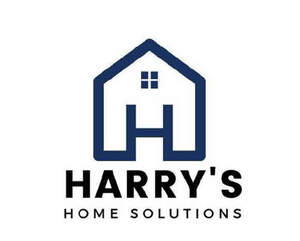

Trade Mark Journal No.2025/046 14 November 2025
UK00004287657 31 October 2025 (35,37,42)

- Class 35
- Wholesale services in relation to construction equipment.
- Class 37
- Building repairs; Repairs to buildings; Concrete repairs; Vehicles maintenance and repair; Maintenance and repair of vehicles; Repair and maintenance of vehicles; Furnace installation and repairs; Maintenance, servicing and repair of vehicles; Repair or maintenance of boilers; Maintenance and repair of flooring; Furniture restoration, repair and maintenance; Furniture maintenance and repair; Maintenance and repair of furniture; Repair or maintenance of vessels; Maintenance and repair of automobiles; Maintenance and repair of safes; Maintenance and repair of upholstery; Maintenance and repair of pipelines; Plumbing installation, maintenance and repair; Maintenance and repair of hardware; Maintenance and repair of buildings; Maintenance and repair of parts and fittings for boats; Vehicle maintenance and repair; Vehicle repair and maintenance; Renovation, repair and maintenance of electrical wiring; Automobile repair and maintenance; Maintenance and repair of motors; Repair or maintenance of bathtubs; Arranging of vehicle repairs; Maintenance and repair of heating; Repair or maintenance of computers; Maintenance and repair of computers; Repair or maintenance of signboards; Building maintenance and repair; Maintenance and repair of heating installations; Roofing repair; Repair of roofing; Maintenance and repair of parts and fittings for buildings; Machinery installation, maintenance and repair; Repair or maintenance of building equipment; Repair of roofs; Maintenance and repair of road making equipment; Repair or maintenance of vehicle washing installation; Maintenance and repair of cooling appliances and installations; Repair and restoration of furniture; Maintenance and repair of gates; Roof repair; Pump repair and maintenance; Pump repair or maintenance; Clock repair or maintenance; Installation, repair and maintenance of heating equipment; Maintenance and repair of pressure equipment; Maintenance and repair of storage installations; Safe maintenance or repair; Safe maintenance and repair; Maintenance and repair of electronic installations; Installation, maintenance and repair of kitchen equipment; Repair or maintenance of conveyors; Services for the repair of drains; Joinery [repair]; Maintenance and repair of security installations; Repair of alarms; Alarms (Repair of -); Services for the repair of pipes; Boiler repair services; Repair of electrical equipment; Strong-room maintenance and repair; Furniture repair; Repair of furniture; Installation, maintenance and repair of telecommunications equipment; Maintenance and repair of electronic equipment; Repair of buildings; Repair or maintenance of fire alarms; Maintenance and repair of road making machines; Inspection of automobiles and their parts prior to maintenance and repair; Scaffolding repair.
- Class 42
- Maintenance and repair of software.
Harrys Home Solutions